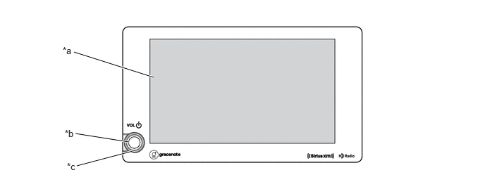
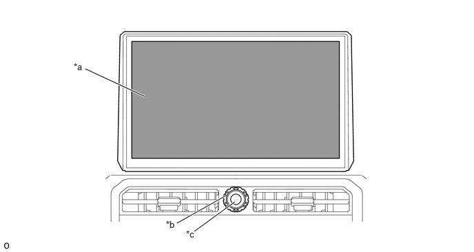

| Last Modified: 10-07-2025 | 6.11:8.1.0 | Doc ID: NM100000002GLC2 |
| Model Year Start: 2024 | Model: Tacoma | Prod Date Range: [12/2023 - ] |
| Title: AUDIO / VIDEO: AUDIO AND VISUAL SYSTEM: AUDIO HEAD UNIT; 2024 - 2026 MY Tacoma Tacoma HV [12/2023 - ] | ||
AUDIO HEAD UNIT
CONSTRUCTION
(a) Models with 8-inch Display:
(1) Various multimedia functions can be enjoyed using radio and display receiver assembly with USB device control ECU, Bluetooth antenna, etc.
(2) The radio and display receiver assembly is equipped with a 8-inch multi-display with capacitive touch panel, power switch and volume switch.
|
*a |
Multi-display |
*b |
Power Switch |
|
*c |
Volume Switch |
- |
- |
(b) Models with 14-inch Display:
(1) Various multimedia functions can be enjoyed using radio and display receiver assembly with USB device control ECU, Bluetooth antenna, etc.
(2) The radio and display receiver assembly is equipped with a 14-inch multi-display with capacitive touch panel.
(3) Power switch and volume switch are positioned at the bottom of the multi-display.
|
*a |
Multi-display |
*b |
Volume Switch |
|
*c |
Power Switch |
- |
- |
FUNCTION
(a) The audio head unit has the following items:
- AM/FM Tuner
- HD Radio Tuner (Only available in HD Radio broadcast areas)
- SiriusXM Satellite Radio Tuner (Only available in SiriusXM Satellite Radio broadcast areas)
- Hybrid Radio Function (Models with Hybrid Radio Function)
- Automatic Sound Levelizer (ASL)
- Bluetooth Audio System
- Bluetooth Hands-free System
- iPod/iPhone Interface
- USB Memory Device Interface
- USB Audio Function
- High-resolution Sound Source Compatible (USB audio system)
- "Apple CarPlay" Function (Models with "Apple CarPlay" Function)
- "Android Auto" Function (Models with "Android Auto" Function)
- Wi-Fi Hotspot (Models with DCM (Telematics Transceiver))
- Customizable vehicle settings can be changed